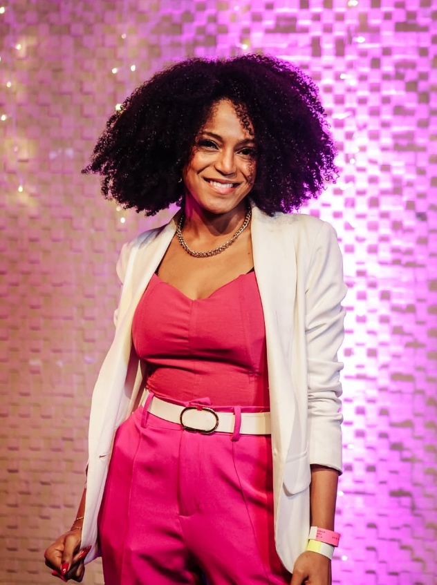

olhar em destaque
Cílios
Fio a fio clássico, efeito molhado ou mega volume: do mais delicado ao mais marcante, escolhido com você.
valora definir
Embelezamento do olhar · +6 anos
dos Cílios & Sobrancelhas
Cílios, sobrancelhas, maquiagem e micropigmentação pensados pra valorizar o que já é seu.

Ateliê dos Cílios & Sobrancelhas
Seu olhar é único. Por isso aqui cada atendimento começa olhando pra você: seus traços, seu estilo e o que você quer realçar.

Quem cuida do seu olhar
Sou especialista em embelezamento do olhar, com mais de 6 anos de experiência em maquiagem, cílios e sobrancelhas. Também dou cursos e formação profissional.
Espaço pra história da Mara
Como funciona
Antes de começar, a Mara olha pros seus traços e entende o efeito que você quer. O resultado é pensado só pra você.
Seus traços, seu estilo e o resultado que você quer.
Formato, cor e efeito escolhidos junto com você.
Feito com calma e com as orientações pra cuidar depois.
Serviços
continue rolandoarrasta pro lado →
Teste rápido
Responde 3 perguntinhas e descubra por onde começar. No atendimento a Mara confirma tudo com você.
leva 10 segundos!
Pergunta 1 de 3
Trabalhos
Investimento
Prazos de exemplo, até a Mara confirmar os dela.
Escolha a sua técnica e arraste até os dias que já se passaram desde a aplicação dos cílios.
Faltam os valores e os prazos da Mara. Depois disso o preço aparece calculado.
Cursos e formação profissional
Quer trabalhar com beleza? Chame no WhatsApp pra saber das turmas.
Espaço pros cursos, datas e conteúdos
Quero saber dos cursosDepoimentos
Espaço pro depoimento de uma cliente
Espaço pro depoimento de uma cliente
Espaço pro depoimento de uma cliente
Dúvidas
Ficou alguma dúvida que não está aqui? Me manda uma mensagem.
Perguntar no WhatsAppÉ só tocar em um dos botões do WhatsApp e dizer o procedimento e o dia que você prefere.
Faça o teste aqui do site pra ter uma ideia. No atendimento a gente conversa e escolhe junto.
Me avise antes de agendar. Alguns procedimentos podem não ser indicados, e pode ser preciso falar com seu médico.
Evite molhar nas primeiras horas, não esfregue os olhos e prefira demaquilante sem óleo. Na hora te passo todas as orientações.
Costuma precisar. A fixação muda de pele pra pele, e isso é explicado na avaliação.
bora realçar esse olhar?
Espaço pra cidade, endereço e horários
Prévia para aprovação